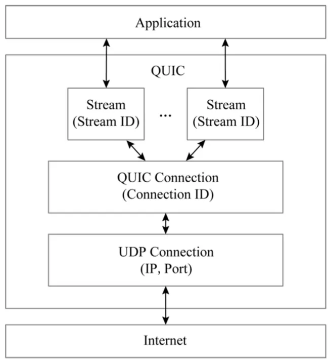
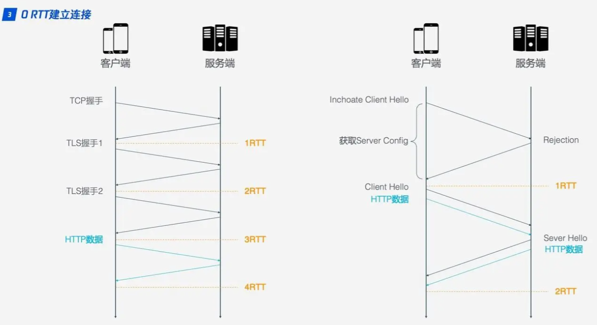
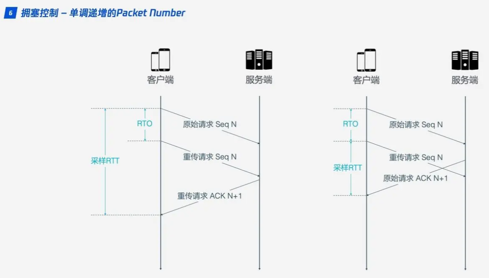
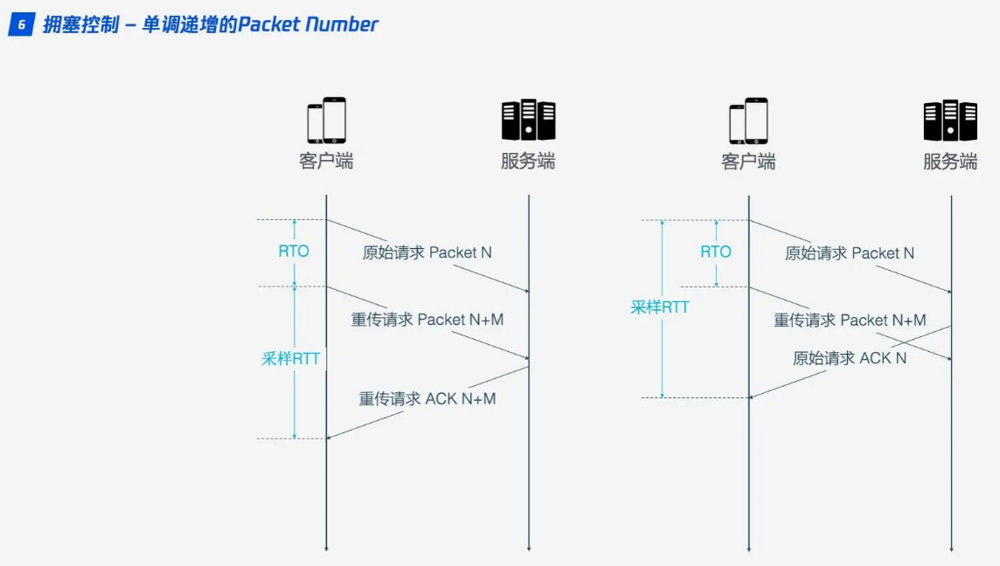
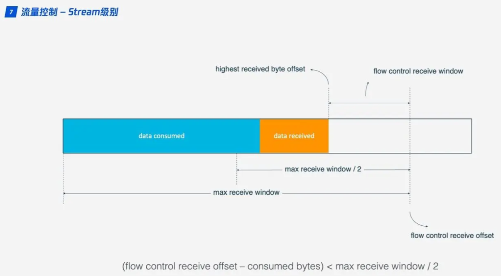
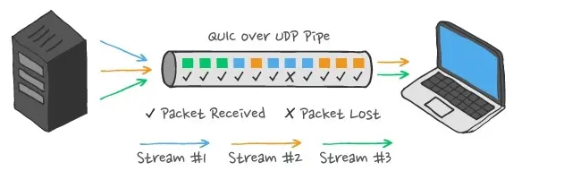

QUIC 结构
QUIC 协议模型如下图所示，其放弃了 TCP∕IP 网络中使用五元组（源 IP，源端口，目的 IP，目的端口，协议标识符）来唯一标识一条连接的方式，而是使用一个全局唯一的随机生成的 ID（即 Connection ID）来标识一条连接。
由下向上分层讨论 QUIC 协议：
-
UDP 层：在 UDP 层传输的是 UDP 报文，此处关注的是 UDP 报文荷载内容是什么，以及如何高效发送 UDP 报文；
-
Connection 层：Connection 通过 Connection ID 来确认唯一连接，Connection 对 packet 进行可靠传输和安全传输；
-
Stream 层：在相应的 Connection 中，Stream 通过 Stream ID 进行唯一流确认，并对 stream frame 进行传输管理。
QUIC 协议相关术语
-
数据包（Packet）：QUIC 协议中一个完整可处理的单元，可以封装在 UDP 数据报（datagram）中。多个 QUIC 数据包（packets）可以封装在一个 UDP 数据报（datagram）中。
-
帧（Frame）：QUIC 数据包（packet）的有效载荷（payload）。
-
端点（Endpoint）：在 QUIC 连接中生成、接收和处理 QUIC 数据包（packets）的终端。QUIC 中只有两个端点（Endpoints）：客户端（client）和服务端（server）。
- 客户端（Client）: 创建 QUIC 连接的端点。
- 服务端（Server）: 接收 QUIC 连接的端点。
-
地址（Address）：未经限定使用时，表示网络路径一端的 IP 版本、IP 地址和 UDP 端口号的元组。
-
连接 ID（Connection ID）：用于标识端点 QUIC 连接的一种标识符。每个端点（Endpoint）为其对端（peer）选择一个或多个连接 ID，将其包含在发送到该 peer 端点的数据包（packets）中。这个值对 peer 不透明。
-
流（Stream）：QUIC 连接中 有序字节的 单向（unidirectional）或双向（bidirectional）通道。一个 QUIC 连接可以同时携带多个流。
-
应用程序（Application）：使用 QUIC 发送或者接收数据的实体。
UDP 层
UDP 荷载大小
荷载大小受限于三个对象：QUIC 协议规定，路径 MTU，终端接受能力。
-
QUIC 不能运行在不支持 1200 字节的单个 UDP 传输网络路径上。QUIC 规定 initial 包大小不得小于 1200，如果数据本身不足 1200（比如 initial ack)，那么需要用 padding 方式至少填充到 1200 字节。
-
QUIC 不希望出现 IP 层分片现象，本要求意味着 UDP 交给 IP 层的数据不会大于 1 个 MTU。假设 MTU 为 1500，IPv4 场景下，UDP 的荷载上限为 1472 字节（1500-20-8），IPv6 下，UDP 荷载上限为 1452 字节（1500-40-8)。QUIC 建议使用 PMTUD 以及 DPLPMTUD 进行 MTU 探测。在实战中，我们建议设置 IPv6 的 MTU 为 1280，大于这个值，某些网络会存在丢包现象。
-
终端能接受 transport paraments 的 max_udp_payload_size(0x03)，是终端接受单个 udp 包大小的能力，发送端应当遵从这一约定。
UDP 荷载内容
UDP 荷载内容即为 QUIC 协议中的 packet。协议规定，如果不超过荷载大小的限制，那么多个 packet 可以组成一个 UDP 报文发出去。在 QUIC 实现中，如果每个 UDP 报文只包含一个 QUIC packet，会更容易出现乱序问题。
高效发 UDP 包
和 TCP 不同，QUIC 需要在应用层就完成 UDP 数据组装，且每个 UDP 报文不大于 1 个 MTU。如果不加以优化，比如每个包直接用 sendto/sendmsg 发送，势必会造成大量的系统调用，影响吞吐量。
-
通过 sendmmsg 接口进行优化，sendmmsg 可以将用户态的多个 UDP QUIC 包通过一次系统调用发到内核态。内核态对于每个 UDP QUIC 包独立作为 UDP 包发出去。
-
在序号 1 中解决了系统调用次数问题，开启 GSO 可以进步一分包延迟到发给网卡驱动前一刻，可以进一步提高吞吐，降低 CPU 消耗。
Connection 层
上节说到，一个 UDP 报文中传输的其实是一个或多个 QUIC packet。所以在 Connection 这一层面，其实是以 packet 为单位进行管理的。一个 packet 到来，终端需要解析出目标 Connection ID (DCID)字段，据此查找出对应的 QIUC connection，并将该 packet 交付给它处理。一个 packet 是由 header 加 payload 两部分组成。
Connection ID
相较于 TCP/IP 使用五元组标识一条连接，QIUC 在 Connection 层采用客户端随机产生的 64 位随机数作为 Connection ID 标识连接，这样 IP 或者端口发生变化时，只要 CID 不变，这条连接依然维持，可以做到连接平滑迁移。
连接建立时使用 UDP 端口号来识别指定机器上的特定 server，而一旦建立，连接通过其 connection ID 关联。
上图左边是 HTTPS 的一次完全握手的建连过程，需要 3 个 RTT。就算是 Session Resumption，也需要至少 2 个 RTT。而 QUIC 由于建立在 UDP 的基础上，同时又实现了 0RTT 的安全握手，所以在大部分情况下，只需要 0 个 RTT 就能实现数据发送，在实现前向加密的基础上，并且 0RTT 的成功率相比 TLS 的 Sesison Ticket 要高很多。QUIC 握手（handshake）合并了加密和传输参数的协商，只需要 1-RTT 即可完成握手，提升了建立连接到交换应用程序数据的速度。第二次连接时，可以通过第一次连接时获取到的预共享密钥（pre-shared secret）立即发送数据（0-RTT）。
安全传输
QUIC 的安全传输依赖 TLS1.3，而 boring ssl 是众多 QUIC 实现的依赖库。协议对 packet 的头部以及荷载均进行了保护（包括 packet number）。TLS1.3 提供了 0-RTT 的能力，在提供数据保护的同时，能在第一时间（服务端收到第一个请求报文时）就将 Response Header 发给客户端。大大降低了 HTTP 业务中的首包时间。为了支持 0-RTT，客户端需要保存 PSK 信息，以及部分 transport parament 信息。
安全传输也经常会涉及到性能问题，在目前主流的服务端，AESG 由于 CPU 提供了硬件加速，所以性能表现最好。CHACHA20 则需要更多的 CPU 资源。在短视频业务上，出于对首帧的要求，通常直接使用明文传输。
Transport Paramenter (TP) 协商是在安全传输的握手阶段完成，除了协议规定的 TP 外，用户也可以扩展私有 TP 内容，这一特性带来了很大的便利，比如：客户端可以利用 TP 告知服务端进行明文传输。
可靠传输
QUIC 协议是需要像 TCP 能够进行可靠传输，所以 QUIC 单独有一个 rfc 描述了丢包检测和拥塞控制的话题。
丢包检测
TCP 为了保证可靠性，使用了基于字节序号的 Sequence Number 及 Ack 来确认消息的有序到达。
QUIC 同样是一个可靠的协议，它使用 Packet Number 代替了 TCP 的 Sequence Number，并且每个 Packet Number 都严格递增。而 TCP，重传 segment 的 Sequence Number 和原始的 segment 的 Sequence Number 保持不变，也正是由于这个特性，引入了 TCP 重传的歧义问题。
在普通的 TCP 里面，如果发送方收到三个重复的 ACK 就会触发快速重传，如果太久没收到 ACK 就会触发超时重传，而 QUIC 使用 NACK (Negative Acknowledgement) 可以直接告知发送方哪些包丢了，不用等到超时重传。TCP 有一个 SACK 的选项，也具备 NACK 的功能，QUIC 的 NACK 有一个区别它每次重传的 Packet Number 都是新的。
但是，单纯依靠严格递增的 Packet Number 肯定是无法保证数据的顺序性和可靠性。QUIC 又引入了一个 Stream Offset 的概念，即一个 Stream 可以经过多个 Packet 传输，Packet Number 严格递增，没有依赖。但是 Packet 里的 Payload 如果是 Stream 的话，就需要依靠 Stream 的 Offset 来保证应用数据的顺序。
拥塞控制
QUIC 针对 TCP 协议中的一些缺陷，专门做了优化。QUIC 重新实现了 TCP 协议的 Cubic 算法进行拥塞控制，并在此基础上做了不少改进。
热插拔
TCP 的拥塞控制需要内核态实现，而 QUIC 在用户态实现，因此 QUIC 修改拥塞控制策略只需要在应用层操作，并且 QUIC 会根据不同的网络环境、用户来动态选择拥塞控制算法。
前向纠错 FEC
QUIC 使用前向纠错（Forward Error Correction, FEC）技术增加协议的容错性。一段数据被切分为 10 个包后，依次对每个包进行异或运算，运算结果会作为 FEC 包与数据包一起被传输，当出现丢包时可根据剩余的包和 FEC 包推算出丢的包。
单调递增的 Packet Number
TCP 为了保证可靠性，使用 Sequence Number 和 ACK 确认消息是否有序到达，但这样的设计存在缺陷。超时发生后客户端发起重传，随后接收到了 ACK 确认，但因为原始请求和重传请求所返回的 ACK 消息一样，所以客户端无法分辨此 ACK 对应的是原始请求还是重传请求。如果客户端认为是原始请求的 ACK，但实际上是左图的情形，则计算的采样 RTT 偏大；如果客户端认为是重传请求的 ACK，但实际上是右图的情形，又会导致采样 RTT 偏小。采样 RTT 会影响超时重传时间（Retransmission TimeOut, RTO）的计算。
QUIC 解决了上面的歧义问题。与采用 Sequence Number 标记不同的是，其使用的 Packet Number 标记严格单调递增，如果 Packet N 丢失了，那么重传时 Packet 的标识不再是 N，而是比 N 大的数字（比如 N+M），这样发送方接收到确认消息时就能方便地知道 ACK 对应的是原始请求还是重传请求。
Connection 层
更大的 ACK block
一般来说，接收方收到发送方的消息后都应该发送一个 ACK 回复，表示收到了数据。但每收到一个数据就返回一个 ACK 回复太麻烦，所以一般不会立即回复，而是接收到多个数据后再回复，TCP SACK 最多提供 3 个 ACK block。但有些场景下，比如下载，只需要服务器返回数据就好，但按照 TCP 的设计，每收到 3 个数据包就要返回一个 ACK。而 QUIC 最多可以捎带 256 个 ACK block。在丢包率比较严重的网络下，更多的 ACK block 可以减少返回包的量，提升网络效率。
流量控制
TCP 会对每个 TCP 连接进行流量控制，通过滑动窗口进行实现。
QUIC 的流量控制有两个级别：Connection 级别和 Stream 级别，用于表达接收端的接受能力。
单条 Stream 的流量控制如上图所示。Stream 还没传输数据时，接收窗口（flow control receive window）就是最大接收窗口（flow control max receive window），随着接收方接收到数据后，接收窗口不断缩小。在接收到的数据中，有的数据已被处理，而有的数据还没来得及被处理。蓝色块表示已处理数据，黄色块表示未处理数据，这部分数据的到来，使得 Stream 的接收窗口缩小。
随着数据不断被处理，接收方就有能力处理更多数据。当满足 (flow control receive offset - consumed bytes) < (max receive window / 2) 时，接收方会发送 WINDOW_UPDATE frame 告诉发送方你可以再多发送些数据过来。这时 flow control receive offset 就会偏移，接收窗口增大，发送方可以发送更多数据到接收方。
由于 QUIC 协议允许多路复用，因此 Stream 级别的控制对防止接收端接收过多数据作用有限，更需要借助 Connection 级别的流量控制。
针对 Stream：可用窗口数 = 最大窗口数 – 接收到的最大偏移数
针对 connection：可用窗口数 = Stream-1 可用窗口数 + … + Stream-N 可用窗口数
QUIC 的流量控制和 TCP 有点区别，TCP 为了保证可靠性，窗口左边向右滑动时的长度取决于已经确认的字节数。如果中间出现丢包，就算接收到了更大序号的 Segment，窗口起始位置也无法超过这个序列号。 QUIC 不同，就算此前有些 packet 没有接收到，它的滑动窗口也只取决于接收到的最大偏移字节数。
Stream 层
Stream 是一个抽象的概念，用以表示一个有序传输的数据流，而这些数据其实就是由 Stream Frame 排列构成。QUIC 使用帧（frames）进行端到端的通信。一个或多个帧（frame）被组装成一个 QUIC 包（packet）。在一个 QUIC Connection 上，可以同时传输多条流，QUIC 通过对多路传输的支持，解决了 TCP 中的队头阻塞问题。
在 TCP 中，如果一个 segment 传递丢失，那么后续 segment 乱序到达，也不会被应用层使用，只到丢失的 segment 重传成功为止，因此 TCP 实现的 HTTP2 的多路复用能力受到制约。在 QUIC 协议中，有序的概念仅维护在单个 Stream 中，Stream 之间和 packet 都不要求有序，假设某个 packet 丢失，只会影响包含在这个包里的 Stream，其他 Stream 仍然可以从后续乱序到达的 packet 中提取到自己所需要的数据交给应用层。
Stream 头部
可以创建两种类型的流：双向流（bidirectional streams），允许客户端和服务端互相发送数据。单向流（unidirectional streams），允许单个端点（endpoint）发送数据。一个基于信用的方案（credit-based scheme）用于限制流的创建并限制可发送的数据量。Stream 的不同类型定义在 HTTP3 中得到了充分的利用。
Stream 荷载
Stream 的荷载即为一系列 Stream Frame，通过 Stream Frame 头部的 Stream ID 来确认单个流。
QUIC 协议：让上网速度提升 30% 的下一代传输协议
你是否也有这样的困扰：打开 APP 巨耗时、刷剧一直在缓冲、追热搜打不开页面、信号稍微差点就直接加载失败…
如果有一个协议能让你的上网速度，在不需要任何修改的情况下就能提升 20%，特别是在网络差的环境下能够提升 30% 以上；如果有一个协议可以让你在 WiFi 和蜂窝数据切换时，网络完全不断开、直播不卡顿、视频不缓冲；你愿意去了解一下它吗？它就是 QUIC 协议。本文将从 QUIC 的背景、原理、实践部署等方面来详细介绍。
网络协议栈
HTTP/3 协议
HTTP/3 是第三个主要版本的 HTTP 协议。与其前任 HTTP/1.1 和 HTTP/2 不同，在 HTTP/3 中，弃用 TCP 协议，改为使用基于 UDP 协议的 QUIC 协议实现。所以，HTTP/3 的核心在于 QUIC 协议。显然，HTTP/3 属于应用层协议，而它使用的 QUIC 协议属于传输层协议。
我们需要 HTTP/3 协议吗
很多人可能都会有这样一个疑问，为什么在 2015 年才标准化了 HTTP/2 ，这么快就需要 HTTP/3？
我们知道，HTTP/2 通过引入“流”的概念，实现了多路复用。简单来说，假设你访问某个网站需要请求 10 个资源，你使用 HTTP1.1 协议只能串行地发请求，资源 1 请求成功之后才能发送资源 2 的请求，以此类推，这个过程是非常耗时的。如果想 10 个请求并发，不需要串行等待的话，在 HTTP1.1 中，应用就需要为一个域名同时建立 10 个 TCP 连接才行（一般浏览器不允许建立这么多），这无疑是对资源的极大的浪费。HTTP/2 的多路复用解决了这一问题，能使多条请求并发。
但现实很残酷，为什么很多业务用了 HTTP/2，反倒不如 HTTP1.1 呢？
第一：多流并发带来了请求优先级的问题，因为有的请求客户端（比如浏览器）希望它能尽快返回，有的请求可以晚点返回；又或者有的请求需要依赖别的请求的资源来展示。流的优先级表示了这个请求被处理的优先级，比如客户端请求的关键的 CSS 和 JS 资源是必须高优先级返回的，图片视频等资源可以晚一点响应。流的优先级的设置是一个难以平衡或者难以做到公平合理的事情，如果设置稍微不恰当，就会导致有些请求很慢，这在用户看来，就是用了 HTTP/2 之后，怎么有的请求变慢了。
第二：HTTP/2 解决了 HTTP 协议层面的队头阻塞，但是 TCP 的队头阻塞仍然没有解决，所有的流都在一条 TCP 连接上，如果万一序号小的某个包丢了，那么 TCP 为了保证到达的有序性，必须等这个包到达后才能滑动窗口，即使后面的序号大的包已经到达了也不能被应用程序读取。这就导致了在多条流并发的时候，某条流的某个包丢了，序号在该包后面的其他流的数据都不能被应用程序读取。这种情况下如果换做 HTTP1.1，由于 HTTP1.1 是多条连接，某个连接上的请求丢包了，并不影响其他连接。所以在丢包比较严重的情况下，HTTP/2 整体效果大概率不如 HTTP1.1。
事实上，我们并不是真的需要新的 HTTP 版本，而是需要对底层传输控制协议 (TCP) 进行升级。
QUIC 协议栈

QUIC 协议实现在用户态，建立在内核态的 UDP 的基础之上，集成了 TCP 的可靠传输特性，集成了 TLS1.3 协议，保证了用户数据传输的安全。
QUIC 协议的优秀特性
建连快
数据的发送和接收，要想保证安全和可靠，一定是需要连接的。TCP 需要，QUIC 也同样需要。连接到底是什么？连接是一个通道，是在一个客户端和一个服务端之间的唯一一条可信的通道，主要是为了安全考虑，建立了连接，也就是建立了可信通道，服务器对这个客户端“很放心”，对于服务器来说：你想跟我进行通信，得先让我认识一下你，我得先确认一下你是好人，是有资格跟我通信的。那么这个确认对方身份的过程，就是建立连接的过程。
传统基于 TCP 的 HTTPS 的建连过程为什么如此慢？它需要 TCP 和 TLS 两个建连过程。如图 1 所示（传统 HTTPS 请求流程图）：

对于一个小请求（用户数据量较小）而言，传输数据只需要 1 个 RTT，但是光建连就花掉了 3 个 RTT，这是非常不划算的，这里建连包括两个过程：TCP 建连需要 1 个 RTT，TLS 建连需要 2 个 RTT。RTT：Round Trip Time，数据包在网络上一个来回的时间。
为什么需要两个过程 ？可恶就可恶在这个地方，TCP 和 TLS 没办法合并，因为 TCP 是在内核里完成的，TLS 是在用户态。也许有人会说干掉内核里的 TCP，把 TCP 挪出来放到用户态，然后就可以和 TLS 一起处理了。首先，你干不掉内核里的 TCP，TCP 太古老了，全世界的服务器的 TCP 都固化在内核里了。所以， 既然干不掉 TCP，那我不用它了，我再自创一个传输层协议，放到用户态，然后再结合 TLS，这样不就可以把两个建连过程合二为一了吗？是的，这就是 QUIC。
QUIC 的 1-RTT 建连
如图 2 所示的 QUIC 的连接建立过程：初次建连只需要 1 个 RTT 即可完成建连。后续再次建连就可以使用 0-RTT 特性。

QUIC 的 1-RTT 建连：客户端与服务端初次建连（之前从未进行通信过），或者长时间没有通信过（0-RTT 过期了），只能进行 1-RTT 建连。只有先进行一次完整的 1-RTT 建连，后续一段时间内的通信才可以进行 0-RTT 建连。
如图 3 所示：QUIC 的 1-RTT 建连可以分成两个部分。QUIC 连接信息部分和 TLS1.3 握手部分。

- QUIC 连接：协商 QUIC 版本号、协商 QUIC 传输参数、生成连接 ID、确定 Packet Number 等信息，类似于 TCP 的 SYN 报文；保证通信的两端确认过彼此，是对的人。
- TLS1.3 握手：标准协议，非对称加密，目的是为了协商出对称密钥，然后后续传输的数据使用这个对称密钥进行加密和解密，保护数据不被窃取。
我们重点看 QUIC 的 TLS1.3 握手过程。

我们通过图 4 可以看到，整个握手过程需要 2 次握手（第三次握手是带了数据的），所以整个握手过程只需要 1-RTT（RTT 是指数据包在网络上的一个来回）的时间。
1-RTT 的握手主要包含两个过程：
- 客户端发送 Client Hello 给服务端；
- 服务端回复 Server Hello 给客户端；
我们通过下图中图 5 和图 6 来看 Client Hello 和 Server Hello 具体都做了啥：
第一次握手（Client Hello 报文）：

首先，Client Hello 在扩展字段里标明了支持的 TLS 版本（Supported Version：TLS1.3）。值得注意的是 Version 字段必须要是 TLS1.2，这是因为 TLS1.2 已经在互联网上存在了 10 年。网络中大量的网络中间设备都十分老旧，这些网络设备会识别中间的 TLS 握手头部，所以 TLS1.3 的出现如果引入了未知的 TLS Version 必然会存在大量的握手失败。

其次，ClientHello 中包含了非常重要的 key_share 扩展：客户端在发送之前，会自己根据 DHE 算法生成一个公私钥对。发送 Client Hello 报文的时候会把这个公钥发过去，那么这个公钥就存在于 key_share 中，key_share 还包含了客户端所选择的曲线 X25519。总之，key_share 是客户端提前生成好的公钥信息。
最后，Client Hello 里还包括了：客户端支持的算法套、客户端所支持的椭圆曲线以及签名算法、psk 的模式等等，一起发给服务端。

第二次握手：（Server Hello 报文）：

服务端自己根据 DHE 算法也生成了一个公私钥对，同样的，Key_share 扩展信息中也包含了服务端的公钥信息。服务端通过 ServerHello 报文将这些信息发送给客户端。
至此为止，双方（客户端服务端）都拿到了对方的公钥信息，然后结合自己的私钥信息，生成 pre-master key，在这里官方的叫法是（client_handshake_traffic_secret 和 server_handshake_traffic_secret），然后根据以下算法进行算出 key 和 iv，使用 key 和 iv 对 Server Hello 之后所有的握手消息进行加密。
注意：在握手完成之后，服务端会发送一个 New Session Ticket 报文给客户端，这个包非常重要，这是 0-RTT 实现的基础。

QUIC 的 0-RTT 握手
这个功能类似于 TLS1.2 的会话复用，或者说 0-RTT 是基于会话复用功能的。

通过上面图 10 我们可以看到，client 和 server 在建连时，仍然需要两次握手，仍然需要 1 个 RTT，但是为什么我们说这是 0-RTT 呢，是因为 client 在发送第一个包 client hello 时，就带上了数据（HTTP 请求），从什么时候开始发送数据这个角度上来看，的确是 0-RTT。
我们通过抓包来看 0-RTT 的过程：

所以真正在实现 0-RTT 的时候，请求的数据并不会跟 Initial 报文（内含 Client Hello）一起发送，而是单独一个数据包（0-RTT 包）进行发送，只不过是跟 Initial 包同时进行发送而已。

我们单独看 Initial 报文发现，除了 pre_share_key、early-data 标识等信息与 1-RTT 时不同，其他并无区别。
QUIC 建连需要注意的问题
第一，QUIC 实现的时候，必须缓存收到的乱序加密帧，这个缓存至少要大于 4096 字节。当然可以选择缓存更多的数据，更大的缓存上限意味着可以交换更大的密钥或证书。终端的缓存区大小不必在整个连接生命周期内保持不变。这里记住：乱序帧一定要缓存下来。如果不缓存，会导致连接失败。如果终端的缓存区不够用了，则其可以通过暂时扩大缓存空间确保握手完成。如果终端不扩大其缓存，则其必须以错误码 CRYPTO_BUFFER_EXCEEDED 关闭连接。
第二，0-RTT 存在前向安全问题，请慎用！
连接迁移
QUIC 通过连接 ID 实现了连接迁移。
我们经常需要在 WiFi 和 4G 之间进行切换，比如我们在家里时使用 WiFi，出门在路上，切换到 4G 或 5G，到了商场，又连上了商场的 WiFi，到了餐厅，又切换到了餐厅的 WiFi，所以我们的日常生活中需要经常性的切换网络，那每一次的切换网络，都将导致我们的 IP 地址发生变化。
传统的 TCP 协议是以四元组（源 IP 地址、源端口号、目的 IP 地址、目的端口号）来标识一条连接，那么一旦四元组的任何一个元素发生了改变，这条连接就会断掉，那么这条连接中正在传输的数据就会断掉，切换到新的网络后可能需要重新去建立连接，然后重新发送数据。这将会导致用户的网络会“卡”一下。
但是，QUIC 不再以四元组作为唯一标识，QUIC 使用连接 ID 来标识一条连接，无论你的网络如何切换，只要连接 ID 不变，那么这条连接就不会断，这就叫连接迁移！

连接 ID
每条连接拥有一组连接标识符，也就是连接 ID，每个连接 ID 都能标识这条连接。连接 ID 是由一端独立选择的，每个端（客户端和服务端统称为端）选择连接 ID 供对端使用。也就是说，客户端生成的连接 ID 供服务端使用（服务端发送数据时使用客户端生成的连接 ID 作为目的连接 ID），反过来一样的。
连接 ID 的主要功能是确保底层协议（UDP、IP 及更底层的协议栈）发生地址变更（比如 IP 地址变了，或者端口号变了）时不会导致一个 QUIC 连接的数据包被传输到错误的 QUIC 终端（客户端和服务端统称为终端）上。
QUIC 的连接迁移过程
QUIC 限制连接迁移为仅客户端可以发起，客户端负责发起所有迁移。如果客户端接收到了一个未知的服务器发来的数据包，那么客户端必须丢弃这些数据包。
如图 14 所示，连接迁移过程总共需要四个步骤。
- 连接迁移之前，客户端使用 IP1 和服务端进行通信；
- 客户端 IP 变成 IP2，并且使用 IP2 发送非探测帧给服务端；
- 启动路径验证（双方都需要互相验证），通过 PATH_CHANLLENGE 帧和 PATH_RESPONSE 帧进行验证。
- 验证通过后，使用 IP2 进行通信。

解决 TCP 队头阻塞问题
在 HTTP/2 中引入了流的概念。目的是实现多个请求在同一个连接上并发，从而提升网页加载的效率。

由图 15 来看，假设有两个请求同时发送，红色的是请求 1，蓝色的是请求 2，这两个请求 在两条不同的流中进行传输。假设在传输过程中，请求 1 的某个数据包丢了，如果是 TCP，即使请求 2 的所有数据包都收到了，但是也只能阻塞在内核缓冲区中，无法交给应用层。但是 QUIC 就不一样了，请求 1 的数据包丢了只会阻塞请求 1，请求 2 不会受到阻塞。
有些人不禁发问，不是说 HTTP2 也有流的概念吗，为什么只有 QUIC 才能解决呢，这个根本原因就在于，HTTP2 的传输层用的 TCP，TCP 的实现是在内核态的，而流是实现在用户态的，TCP 是看不到“流”的，所以在 TCP 中，它不知道这个数据包是请求 1 还是请求 2 的，只会根据 seq number 来判断包的先后顺序。
更优的拥塞控制算法
拥塞控制算法中最重要的一个参数是 RTT，RTT 的准确性决定了拥塞控制算法的准确性；然而，TCP 的 RTT 测量往往不准确，QUIC 的 RTT 测量是准确的。

如图 16 所示：由于网络中经常出现丢包，需要重传，在 TCP 协议中，初始包和重传包的序号是一样的，拥塞控制算法进行计算 RTT 的时候，无法区别是初始包还是重传包，这将导致 RTT 的计算值要么偏大，要么偏小。

如图 17 所示：QUIC 通过 Packet Number 来标识包的序号，而且规定 Packet Number 只能单调递增，这也就解决了初始包和重传包的二义性。从而保证 RTT 的值是准确的。
另外，不同于 TCP，QUIC 的拥塞控制算法是可插拔的，由于其实现在用户态，服务可以根据不同的业务，甚至不同的连接灵活选择使用不同的拥塞控制算法（Reno、New Reno、Cubic、BBR 等算法都有自己适合的场景）。
QUIC 的两级流量控制
很多人搞不清楚流量控制与拥塞控制的区别。二者有本质上的区别。
- 流量控制要解决的问题是：接收方控制发送方的数据发送的速度，就是我的接收能力就那么大点，你别发太快了，你发太快了我承受不住，会给你丢掉你还得重新发。
- 拥塞控制要解决的问题是：数据在网络的传输过程中，是否网络有拥塞，是否有丢包，是否有乱序等问题。如果中间传输的时候网络特别卡，数据包丢在中间了，发送方就需要重传，那么怎么判断是否拥塞了，重传要怎么重传法，按照什么算法进行发送数据才能尽可能避免数据包在中间路径丢掉，这是拥塞控制的核心。
所以，流量控制解决的是接收方的接收能力问题，一般采用滑动窗口算法；拥塞控制要解决的是中间传输的时候网络是否拥堵的问题，一般采用慢启动、拥塞避免、拥塞恢复、快速重传等算法。
QUIC 是双级流控，不仅有连接这一个级别的流控，还有流这个级别的流控。如下图所示，每个流都有自己的可用窗口，可用窗口的大小取决于最大窗口数减去发送出去的最大偏移数，跟中间已经发送出去的数据包，是否按顺序收到了对端的 ACK 无关。

QUIC 协议如何优化
QUIC 协议定义了很多优秀的功能，但是在实现的过程中，我们会遇到很多问题导致无法达到预期的性能，比如 0-RTT 率很低，连接迁移失败率很高等等。
QUIC 的 0-RTT 成功率不高
导致 0-RTT 成功率不高的原因一般有如下几个：
-
服务端一般都是集群，对于客户端来说，处理请求的服务端是不固定的，新的请求到来时，如果当前 client 没有请求过该服务器，则服务器上没有相关会话信息，会把该请求当做一个新的连接来处理，重新走 1-RTT。针对此种情况，我们可以考虑集群中所有的服务器使用相同的 ticket 文件。
-
客户端 IP 不是固定的，在发生连接迁移时，服务端下发的 token 融合了客户端的 IP，这个 IP 变化了的话，携带 token 服务端校验不过，0-RTT 会失败。针对这个问题，我们可以考虑采用如图 19 所示的方法，使用设备信息或者 APP 信息来生成 token，唯一标识一个客户端。

- Session Ticket 过期时间默认是 2 天，超过 2 天后就会导致 0-RTT 失败，然后降级走 1-RTT。可以考虑增长过期时间。
实现连接迁移并不容易
连接迁移的实现，不可避开的两个问题：一个是四层负载均衡器对连接迁移的影响，一个是七层负载均衡器对连接迁移的影响。
- 四层负载均衡器的影响：LVS、DPVS 等四层负载均衡工具基于四元组进行转发，当连接迁移发生时，四元组会发生变化，该组件就会把同一个请求的数据包发送到不同的后端服务器上，导致连接迁移失败；
- 七层负载均衡器的影响（QUIC 服务器多核的影响）：由于多核的影响，一般服务器会有多个 QUIC 服务端进程，每个进程负责处理不同的连接。内核收到数据包后，会根据二元组（源 IP、源 port）选择已经存在的连接，并把数据包交给对应的 socket。在连接迁移发生时，源地址发生改变，可能会让接下来的数据包去到不同的进程，影响 socket 数据的接收。
如何解决以上两个问题？ DPVS 要想支持 QUIC 的连接迁移，就不能再以四元组进行转发，需要以连接 ID 进行转发，需要建立连接 ID 与对应的后端服务器的对应关系；
QUIC 服务器也是一样的，内核就不能用四元组来进行查找 socket，四元组查找不到时，就必须使用连接 ID 进行查找 socket。但是内核代码又不能去修改（不可能去更新所有服务器的内核版本），那么我们可以使用 eBPF 的方法进行解决。如下图 20 所示：

UDP 被限速或禁闭
业内统计数据全球有 7% 地区的运营商对 UDP 有限速或者禁闭，除了运营商还有很多企业、公共场合也会限制 UDP 流量甚至禁用 UDP。这对使用 UDP 来承载 QUIC 协议的场景会带来致命的伤害。对此，我们可以采用多路竞速的方式使用 TCP 和 QUIC 同时建连。除了在建连进行竞速以外，还可以对网络 QUIC 和 TCP 的传输延时进行实时监控和对比，如果有链路对 UDP 进行了限速，可以动态从 QUIC 切换到 TCP。

QUIC 对 CPU 消耗大
相对于 TCP，为什么 QUIC 更消耗资源？
- QUIC 在用户态实现，需要更多的内核空间与用户空间的数据拷贝和上下文切换；
- QUIC 的 ACK 报文也是加密的，TCP 是明文的。
- 内核知道 TCP 连接的状态，不用为每一个数据包去做诸如查找目的路由、防火墙规则等操作，只需要在 tcp 连接建立的时候做一次即可，然而 QUIC 不行；
总的来说，QUIC 服务端消耗 CPU 的地方主要有三个：密码算法的开销；UDP 收发包的开销；协议栈的开销。
针对这些，我们可以适当采取优化措施来：
- 使用 Intel 硬件加速卡卸载 TLS 握手。
- 开启 GSO 功能。
- 数据在传输过程中，可以将一轮中所有的 ACK 解析后再同时进行处理，避免处理大量的 ACK。
- 适当将 QUIC 的包长限制调高（比如从默认的 1200 调到 1400 个字节）。
- 减少协议栈的内存拷贝。
QUIC 的性能
从公开的数据来看，国内各个厂（腾讯、阿里、字节、华为、OPPO、网易等等）使用了 QUIC 协议后，都有很大的提升，比如网易上了 QUIC 后，响应速度提升 45%，请求错误率降低 50%；比如字节火山引擎使用 QUIC 后，建连耗时降低 20%~30%；比如腾讯使用 QUIC 后，在腾讯会议、直播、游戏等场景耗时也降低 30%。

总结
QUIC 协议的出现，为 HTTP/3 奠定了基础。这是近些年在 web 协议上最大的变革，也是最优秀的一次实践。面对新的协议，我们总是有着各种各样的担忧，诚然，QUIC 协议在稳定性上在成熟度上，的确还不如 TCP 协议，但是经过近几年的发展，成熟度已经相当不错了，Nginx 近期也发布了 1.25.0 版本，支持了 QUIC 协议。所以面对这样优秀的协议，我们希望更多的公司，更多的业务参与进来使用 QUIC，推动 QUIC 更好的发展，推动用户上网速度更快！